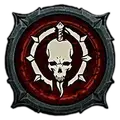

Totenbeschwörer
Ein Meister über Blut, Knochen und Schatten, der gefallene Gegner als Ressource oder als Teil seiner Armee nutzt.
- Kernressourcen
- Essenz · Leichen
- Klassenmechanik
- Totenbuch
- Reichweite
- Mittel bis fern
- Schwerpunkt
- Diener · Blut · Knochen
Spielweise
Essenz speist direkte Zauber, Leichen ermöglichen Explosionen, Kontrolle und Beschwörungen. Im Totenbuch werden Skelettkrieger, Magier und Golems spezialisiert oder geopfert, um den Helden selbst zu stärken.
Stärken
Darauf solltest du achten
Mobilität bleibt eine Schwäche. Varianten ohne Diener müssen Leichen und defensive Abklingzeiten sehr bewusst verwalten.
Fertigkeitsfamilien
Knochen steht für direkte und kritische Treffer, Blut für Selbstheilung und Überwältigen, Schatten für Schaden über Zeit. Makabre Fertigkeiten verwerten Leichen; Flüche schwächen ganze Gegnergruppen.
Typische Ausrichtungen
Knochenspeer und Knochengeist sind direkte Schadensvarianten. Blutlanze und Blutwoge spielen robuster, Schattenseuche und Leichenexplosion kontrollieren Flächen. Diener-Builds verstärken Skelette und Golem.
Das Totenbuch
Skelettkrieger, Skelettmagier und Golem besitzen jeweils Varianten und Aufwertungen. Jede Dienerart kann stattdessen geopfert werden, um einen permanenten Bonus für einen Build ohne diesen Diener zu erhalten.
Für wen geeignet?
Für Spieler, die eine Armee kommandieren oder Ressourcen aus gefallenen Gegnern ziehen wollen – und denen ein methodischerer Kampfrhythmus liegt.